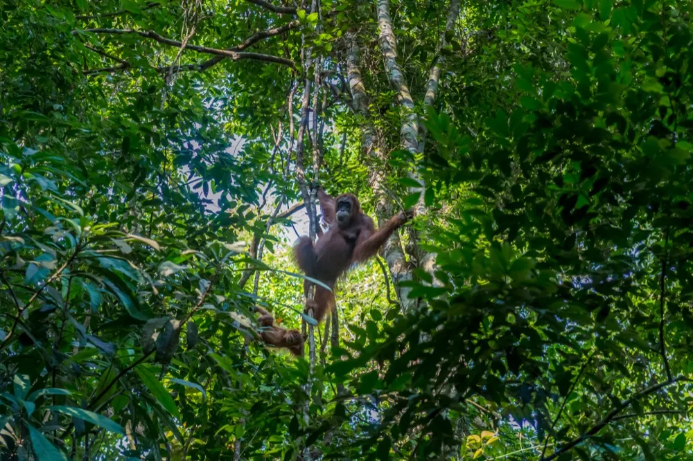
Nature
Living systems restored — biodiversity and ecosystem integrity, tracked through habitat condition over time.
NbS Tool helps frontline organisations across Southeast Asia scope a site, read its baseline, choose a Nature-based pathway, and carry it all the way to a monitored, donor-ready MRV record — on one standardised platform.
Protect, sustainably manage, or restore an ecosystem to solve a real societal challenge — and a high-quality solution delivers measurable benefit across three intertwined dimensions at once.
It's why our mark holds three things at once — an Orangutan, a face and a cloud. Nature, People, and Climate, inseparable.

Living systems restored — biodiversity and ecosystem integrity, tracked through habitat condition over time.
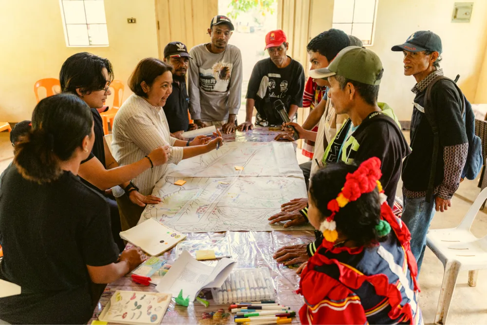
Communities at the centre – livelihoods, resilience and GEDSI, with free, prior & informed consent in the record.
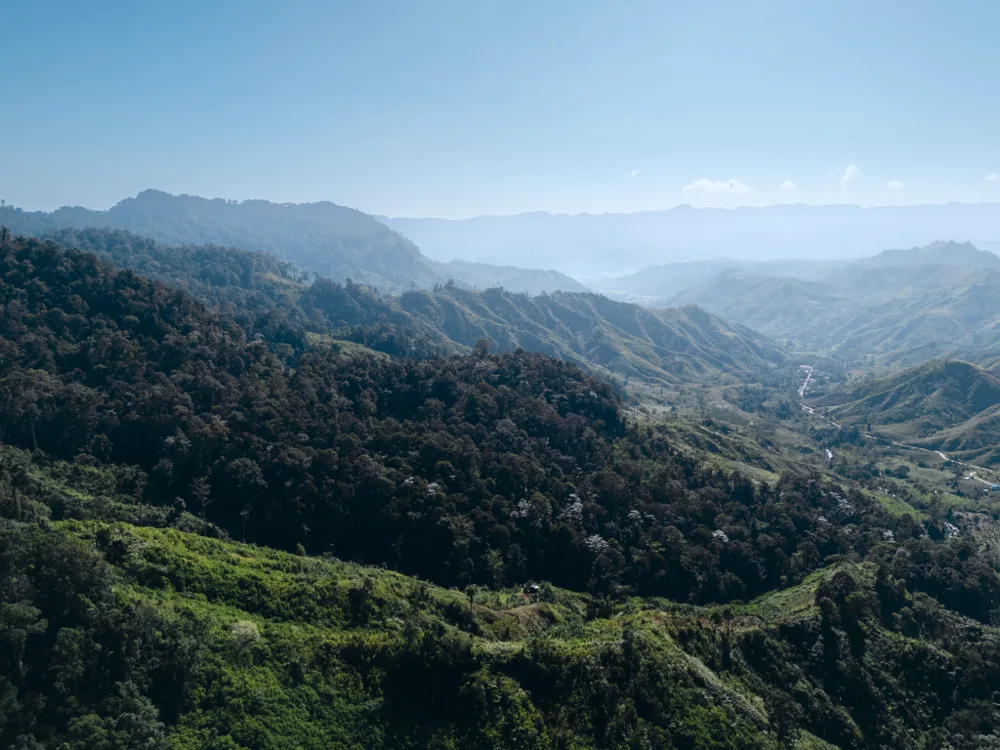
Carbon you can count — biomass and emissions avoided, quantified from vegetation cover on a five-pool basis.
Most tools hand you a map and stop. NbS Tool threads every stage together — so the polygon you draw on day one becomes the impact you verify years later. Scroll to follow a single project through.


Search a location or drop into the field, then read it through five thematic layer groups — land cover, nature, climate, people and country-specific permits. Draw the boundary that becomes your Area of Interest.
The analyser builds a technical baseline automatically — biomass, carbon stock, vegetation cover — then profiles the threats: deforestation, fire and flood. No manual data compilation, harmonised to a Southeast-Asia standard.
Based on what's actually eligible for your ecosystem, pick a Nature-based pathway — Protect, Manage or Restore — across Forest, Mangrove or Peatland. Recommendations are framed as conditional examples, never prescriptions.
Generate standardised, regulator-grade documents straight from your analysis — a General Feasibility Study and a Climate, Community & Biodiversity (CCB) document aligned with Verra. Bridge the credibility gap with donors and auditors.
Every project lives in one dashboard — boundaries, analyses, documents, collaborators and incubator status, from draft to ready-to-submit. Manage privacy, invite your team, and send a project to the NbS Incubator.
Translate your pathway into a monitoring plan — indicators, methods and frequency — then track them live in the MRV dashboard. Compare year on year, attach field evidence, and export a verifiable summary report.
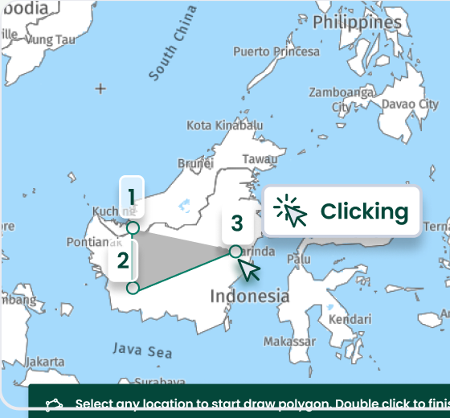
See tutorialSearch a site, toggle five thematic layer groups, inspect legends, and export generated maps for baseline documentation.
Build a technical baseline across Climate, People and Nature, profile the threats, then select a pathway: Protect, Manage, Restore.
Generate compliance and pre-feasibility documents from your analysis — ready for donors and auditors.
Design a long-term monitoring framework with mandatory and additional indicators tied to your pathway.
Manage every project in one place — statuses, baselines, documents and monitoring, paginated and searchable.
Monitor, report and verify impact over the life of the project — closing the loop on the Design-to-MRV workflow.
A live snapshot of triple-benefit projects already documented and monitored with the tool, across 3 ecosystems and 8 provinces of Southeast Asia.
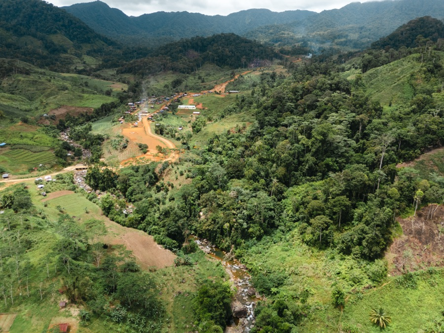
Bukidnon, Phillipine
Bukidnon, Phillipine
12–16 March 2026. Corn climbs the mountainside where loggers stopped in the 2000s. Above it, closed forest and the Philippine Eagle. A 2024 ordinance protects the forest, which also means no carbon buyer will pay to keep it standing.
Half the participants were given cameras. The women photographed the waste and the broken facilities. The men photographed the landslide. Dozens of women from here work abroad as domestic helpers. The work they left behind went to someone else in the house.
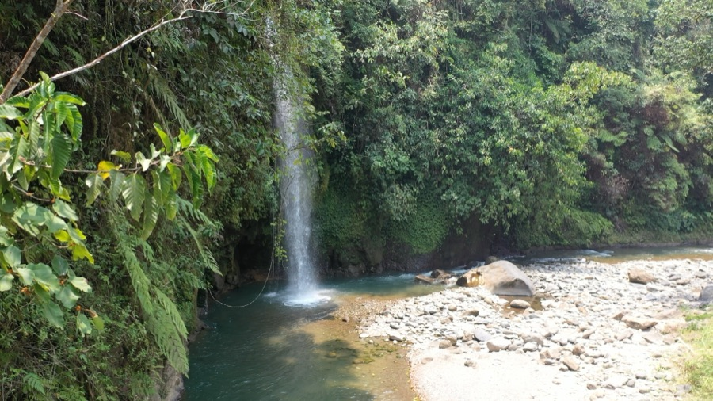
South Sumatra, Indonesia
South Sumatra, Indonesia
Nature can deliver 30% of what the climate needs by 2030, and Indonesia finally has the rules to pay for it. What the province does not have is data anyone can defend.
HaKI laid out its paperwork: social baselines pulled from permit files, carbon baselines lifted from provincial emission plans, biodiversity baselines taken from what villagers remember seeing. Then the tool went on the table and the room was asked to break it.
In Semendo the same test ran against the ground, where one polygon sat four kilometres off and two village forests overlapped. Triple benefit is the ambition. A map you can trust is the price of entry.
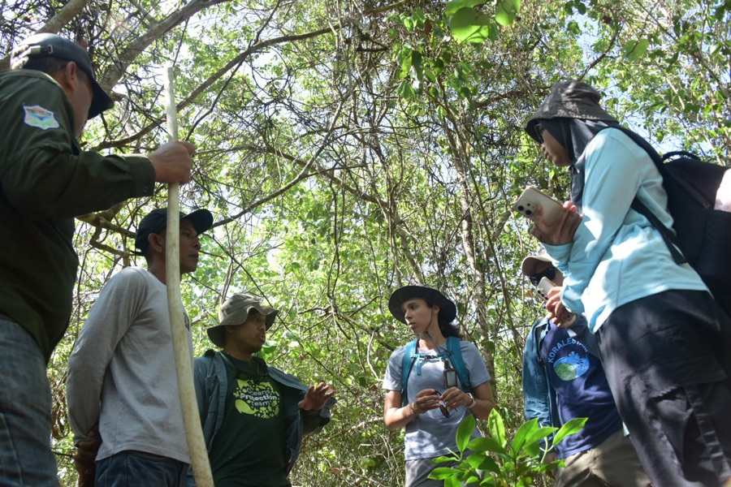
Riau, Indonesia
Riau, Indonesia
9–13 February 2026. A village on mangrove, 979 hectares of it, protected by decree. The forest used to feed charcoal kilns. Now the same families patrol it, though some still cut.
Ten ponds sit on the coast and two belong to the village. Women wake at two and finish at ten, which is why they miss the meetings. The sea keeps taking the shoreline. They build breakwaters from mangrove wood to shield the mangroves they planted.
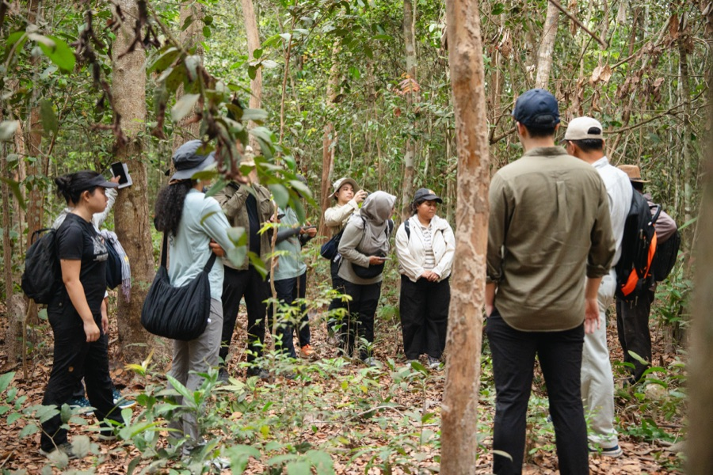
Cambodia
Cambodia
23–27 February 2026. Three community forests, 451 hectares to restore. Nobody wanted this land. Cashew and rubber took the rest.
Ask about the gibbon and one village says the 1970s. Ask about the hornbill and Ou Pong Rong says twenty of them, every fruiting season. Something is still here. A four-hectare lake where the village prays once a year.
Men map the boundary and the road. Women map the water point. Only one of those maps earns money.
The tool is built to move data from exploratory to defensible — so your findings stand up to certification bodies, officials and auditors.
System-generated layers give every site an instant starting point.
Harmonised with national definitions and regulatory guidance.
Upload your own project-derived measurements — the gold standard for certification.
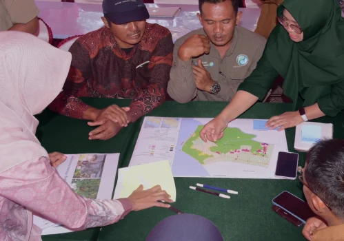
Tied to a clear adaptation, mitigation or resilience need for the community it serves.
Scoped to the ecosystem and landscape, not arbitrary administrative lines.
Improves habitat condition and ecosystem integrity, tracked through degradation layers.
Backed by a baseline credible enough to attract and withstand climate finance.
Centres local organisations, with GEDSI indicators built into monitoring.
Carried into a long-term MRV plan so impact is measured, reported and verified.
↳ Every figure links back to its method — the math behind the map — so you can explain your project to anyone who asks.
Learn the methodology behind NbS ToolNbS Tool would really enhance the ability of indigenous people to plan their land management. With the right facilitation and support, the NbS Tool would be very empowering.
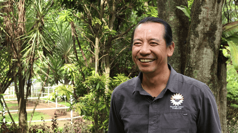
NbS Tool is able to improve IP groups' Ancestral Domains Sustainable Development and Protection Plan (ADSPP) by providing more data, ensuring secure data protection.
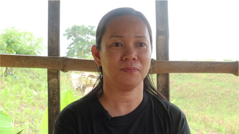
NbS Tool could support our diverse needs like generating documents for social forestry or management plans by measuring areas and potential carbon sequestration.
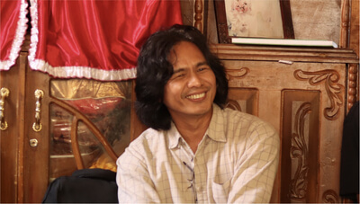
NbS Tool will help processing and collecting data, so it would be better documented for related stakeholders who will manage sustainable social forestry after the permit.
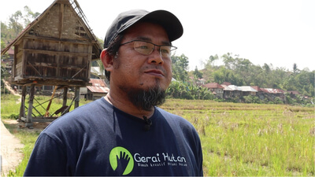
Built under the ASEAN-NbS Tool project by a coalition working to improve data access, showcase high-quality projects, and direct funding to local communities.
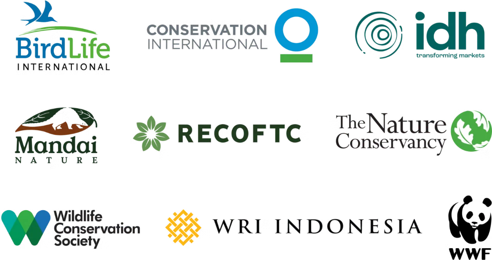
Start where every great Nature-based Solution starts: a boundary on a map. Scope it, analyse it, and build the proof that unlocks the finance to protect it.